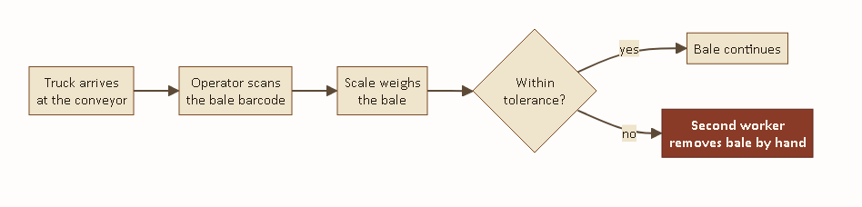
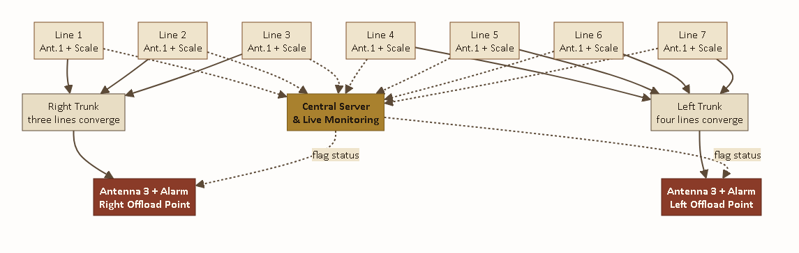
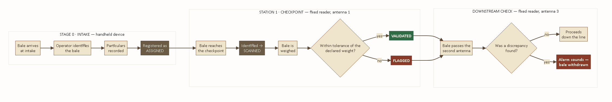
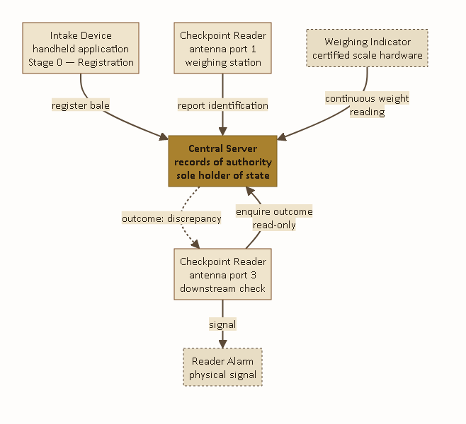
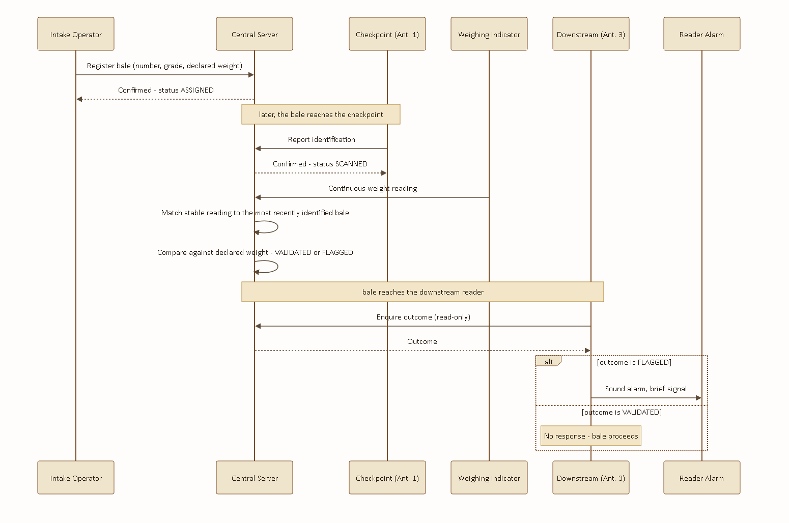
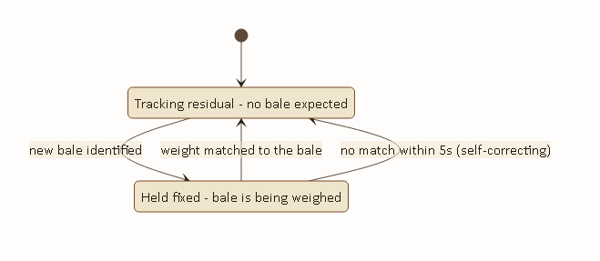
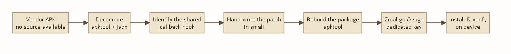

BALE RECEPTION & VALIDATION AUTOMATION
System Architecture, Technical Reference & Deployment Roadmap
|
PREPARED BY Hemed Salum Kabangila ROLE Field Student — Software Architect & Developer |
PREPARED FOR Mkwawa Leaf Tobacco Limited DATE August 2026 |
1 Foreword
2 Executive Summary
3 Current Operations — The Manual Process
4 The MTS Vision — Full-Scale Automated Design
5 Proof of Concept — The Working Demonstration
6 System Architecture
7 Technical Reference
7.1 MTS Demo — Central Server
7.2 RFID Antenna — Fixed Checkpoint Reader
7.3 Scanner — Intake Handheld Device
8 Path to Full Deployment
9 Appendix — Glossary & Reference Tables
I wrote the first line of this system after watching a receiving shift at Mkwawa Leaf for the better part of a day. Fourteen people were doing work that came down, in the end, to the same three questions asked over and over: which bale is this, how much does it weigh, and does that number agree with what was declared. Two of those questions can be answered by a chip the size of a fingernail and a scale that already sits under every conveyor. The third is arithmetic.
What follows is my account of building the system that answers those three questions automatically — why it is built the way it is, what broke along the way and how I fixed it, and what it would take to run it across all seven receiving lines instead of the one I used to prove it out. I have tried to write it so that someone who has never opened the source code can follow the reasoning, and so that someone who has to open the source code next year can find their way around it quickly.
Hemed Salum Kabangila
Field Student — Software Architect & Developer
Mkwawa Leaf Tobacco Limited receives baled tobacco from contracted farms by truck, across seven receiving conveyor lines. Every bale must be identified and weighed against the figure declared when it was baled, so that discrepancies — under-filled bales, mislabelled grades, tampering — are caught before the bale moves further into the factory. Today that identification and weighing is done by hand, at every line, by an operator with a barcode scanner and a scale wired to a PC. A second worker per line stands by to physically remove any bale the computer flags. Fourteen people are committed to this single step of the receiving process.
MTS — the Mkwawa Tracking System — replaces the barcode scanner and the manual read with passive UHF RFID. A bale is tagged once, at the farm, when it is packed onto the truck. From that point forward nobody needs to scan anything by hand: a fixed reader at the checkpoint identifies the bale automatically as it passes, the scale beneath it reports the weight, and a central server makes the validation decision in well under a second. A second, independent reader further down the line re-checks the outcome and sounds an alarm only if the bale was flagged, so that the one remaining worker per offload point knows exactly which bale to pull.
| 14 → 2 Workers required, full deployment |
7 Receiving lines covered |
<1s Validation decision time |
The system described in this document has been built and proven on a single receiving line — end to end, from farm-side tagging through to a live flagged-bale alarm — and is documented here exactly as it stands today. Section 4 sets out the full seven-line design this pilot is built to scale into; Section 8 sets out precisely what stands between the current pilot and that full deployment. Nothing in this document describes work that has not actually been built, tested, and run against real hardware on the factory floor, except where it is explicitly marked as a proposal for the next phase.
Mkwawa Leaf's receiving floor has seven conveyor lines, each fed directly by trucks arriving from contracted farms. Each line runs the same manual process, independently, with its own staff and its own equipment:
FIGURE 1 · THE MANUAL PROCESS, PER LINE

Identical at all seven lines. The barcode scanner and the scale are both wired directly into the line's own PC; nothing is shared or centralised between lines.
An operator stationed at the line holds a wired barcode scanner. As each bale arrives, they physically locate its barcode sticker, scan it, and the PC looks up the bale's declared weight and grade. The scale — connected to the same PC over a serial cable — reports the bale's actual weight, and the PC's software compares the two figures and marks the bale as passed or flagged. A second worker, stationed just past the scale, watches for a flagged result and physically lifts that bale off the conveyor by hand.
This works, and it has worked for years, but it has three costs that compound across seven lines running in parallel:
Two people per line, seven lines, every shift: fourteen people whose entire task is reading a barcode and watching for a flag. None of them are doing anything a computer cannot do faster and more consistently.
Each bale waits on a human to physically aim a scanner at its barcode and pull the trigger. On a receiving floor moving hundreds of bales a shift, that single manual step sets the pace for the entire line.
A barcode sticker that has been rained on, folded, or partially torn in transit is unreadable to a scanner in a way it would not be to an RFID reader, which does not require line of sight or an intact printed surface. A tired operator on a long shift can also simply miss a bale, or scan the wrong one, in a way an automated checkpoint cannot.
The design I am proposing keeps the physical layout of the receiving floor exactly as it is — seven lines, trucks unloading as they do today — and replaces only the identification and weighing step at each line, plus the offload step at the end. Nothing about how bales are trucked in or how they move once past the checkpoint changes.
Every one of the seven lines gets its own RFID checkpoint: a fixed reader antenna positioned over the conveyor, paired with the same scale already installed there. As a tagged bale passes, the reader identifies it and the scale weighs it; the central server validates the two figures against each other and records the outcome. The bale is not stopped or slowed for this — it continues moving regardless of the result, the same way it does under the manual process today.
Every one of those seven checkpoints reports back to the same central server independently and continuously — there is no per-line dashboard, no separate record per conveyor. One supervisor watching one screen can see every line's activity as it happens, which is not something the current manual setup, with seven standalone PCs, offers at all today.
Downstream of the seven individual lines, the physical conveyors themselves already merge: three of the seven lines feed into one trunk conveyor, and the remaining four feed into a second trunk. This is where the second checkpoint sits — one antenna per trunk, positioned right at the point where a worker is already needed to receive bales off that trunk. That antenna asks the same central server whether the bale passing it was flagged upstream, and sounds the reader's own alarm if so, telling the worker at that exact spot to pull it.
FIGURE 2 · FULL SEVEN-LINE TOPOLOGY

Three lines converge to the right trunk, four to the left. Every checkpoint — all seven upstream, both downstream — reports to one central server (dotted lines); only the two offload points still require a person.
FIGURE 2A · ORIGINAL SITE-PLANNING SKETCH

The layout Figure 2 was engineered from — seven receiving points, two alarm/offload checkpoints, and every reader wired back to one monitoring station.
The arithmetic is straightforward. Fourteen people are needed today because the identification-and-weigh step is manual at all seven lines, and because every line needs its own dedicated offload worker. Once that step is automatic everywhere, the only work left for a human is physically lifting a flagged bale off a conveyor — and because the seven lines physically converge into two trunks before that has to happen, two people, one per trunk, can cover all seven lines between them.
| 7 → 2 Trunk convergence (3 right, 4 left) |
9 Reader checkpoints at full scale |
14 → 2 Total receiving-floor headcount |
Before proposing that Mkwawa Leaf commit to re-equipping all seven lines, I built the complete system end to end on one line, so that the validation logic, the hardware integration, and the alarm behaviour could all be proven against real bales before a single additional antenna was purchased. Everything described in this section is built, installed, and has been run against real tagged bales and a real scale on the factory floor — it is not a simulation.
FIGURE 3 · THE BALE JOURNEY — AS BUILT

The complete path a single bale follows on the pilot line, from farm-side tagging through to the flagged-bale alarm.
Before a bale ever leaves the farm, the person packing the truck identifies it with a handheld RFID device and records its bale number, grade, farm, farmer, truck, and declared weight. That record is sent immediately to the central server, so by the time the truck reaches Mkwawa Leaf, every bale on it already has a record waiting for it.
As the bale reaches the pilot conveyor, the fixed reader's first antenna identifies its tag and reports it to the server, which opens a short window to receive a weight. The scale beneath the conveyor streams its reading continuously; the server matches a stable reading to the bale that was just identified, nets out any residual weight left on the platform from the previous bale, and compares the result against the bale's declared weight to within a published tolerance. The outcome — validated or flagged, with a stated reason if flagged — is recorded immediately.
A second antenna, further along the same conveyor, identifies the bale again and asks the server, read-only, whether it was flagged. If it was, the reader's own alarm sounds — several short pulses, distinct from its routine per-read acknowledgement — so the bale can be pulled before it proceeds any further. If it was not flagged, nothing happens at all; the system produces no output for a bale that requires no action, which is deliberate, since a constant stream of confirmations for ordinary bales would train an operator to ignore the alarm altogether.
This single-line build is what all of the technical detail in Section 7 describes. It is also what has been demonstrated live: a tag placed near the checkpoint antenna has been shown, in real time, to reach the server and appear in its records within seconds, and a deliberately under-weight bale has been shown to be correctly flagged and to trigger the downstream alarm.
Three independent pieces of software carry out the process described above, coordinated through one central server that is the sole holder of every bale's record. None of the three ever communicate directly with one another — each reports to the server, and the server alone decides what happens next.
FIGURE 4 · SYSTEM ARCHITECTURE

Solid lines are requests; the dashed line is the server's reply to the downstream reader.
| Component | Runs on | Responsibility |
|---|---|---|
| Intake Device | Handheld RFID scanner, farm-side | Tags each bale and records its declared particulars before the truck departs. |
| Checkpoint Reader | Fixed UHF reader, on the conveyor | Identifies bales at the weighing station (antenna 1) and re-confirms the outcome downstream (antenna 3). |
| Central Server | Factory PC | The single authoritative record of every bale — its declared particulars, its measured weight, and its outcome. |
| Weighing Indicator | Scale hardware, under the conveyor | Reports live weight continuously to the server; makes no decisions itself. |
The message sequence below traces a single bale through the entire system, in the exact order the messages occur.
FIGURE 5 · MESSAGE SEQUENCE

The scale is never queried directly — it streams continuously, and the server itself determines which bale a given reading belongs to.
How the source code is actually put together
This section documents the three codebases individually — what each file is responsible for, how they are wired to one another, the tools used to build and ship each one, and the real problems encountered while building them. It is written for whoever has to open this code next, including myself in a year's time.
Stack: Python 3, Flask, plain TCP sockets. No database — every bale's record lives in memory for the life of the server process. I made that decision deliberately for the pilot: a receiving shift is a bounded window, the record only needs to survive that window, and an in-memory dictionary is one less thing that can go wrong on a factory floor PC with no dedicated database administrator. A persistence layer is a reasonable addition for full deployment and is discussed in Section 8.
| File | Responsibility |
|---|---|
app.py | Every HTTP route, and the background thread that matches scale readings to scanned tags. |
models.py | The in-memory bale registry and all business logic — assignment, scanning, weight validation. |
scale.py | Reads the live weight stream off the scale indicator over TCP. |
templates/index.html | The intake-review page — lists every registered bale. |
templates/factory_processing.html | The live checkpoint page — scale reading, latest outcome, running flagged list. |
| Route | Method | Purpose |
|---|---|---|
/api/assign | POST | Called by the intake handheld to register a bale. |
/scan | POST | Called by the checkpoint reader's antenna 1 on every identification. |
/validate | POST | Manual weight override, for when the scale link is unavailable. |
/api/check_tag | POST | Read-only status lookup, called by the downstream antenna 3. |
/api/tags, /api/latest_scan, /api/stats | GET | Polled by the live checkpoint page. |
Every bale record carries exactly one status at a time, moving forward through ASSIGNED → SCANNED → VALIDATED or FLAGGED. All weights are stored internally in grams regardless of what unit is shown on screen — a decision that turned out to matter more than it looked like it would at the time (see the achievement note below).
The single hardest problem in this codebase was not the RFID side at all — it was the scale. A conveyor scale never truly returns to zero after a bale is lifted off it; dust, debris, and the platform's own settling leave a small residual reading behind. Left unhandled, that residual gets read as part of the next bale's weight and throws the comparison off by exactly the residual amount.
app.py tracks that residual continuously while no bale is expected, and freezes it the instant a new bale is identified, so the next weighing nets against the correct baseline rather than a stale one. If a scan is never followed by a matching weight — a misread tag, nothing actually placed on the scale — the freeze releases itself automatically after five seconds rather than leaving the server stuck ignoring real residual buildup indefinitely.
FIGURE 6 · THE RESIDUAL TRACKER'S OWN STATE

Two states only, with a five-second self-correction if a scan is never followed by a matching weight.
|
PROBLEM FACED Early testing produced a bale being flagged repeatedly — five separate flagged results for the same tag, three seconds apart, every one of them computing a near-zero weight while the scale itself sat perfectly steady the entire time. I traced it by polling Fix: a result now carries a ten-second cooldown. A re-read of a bale that already has a result within that window is treated as the same bale still sitting there, not a new arrival — its status is left untouched and the residual baseline is not re-frozen against it. |
|
PROBLEM FACED The scale hardware changed mid-project — from an Avery Weigh-Tronix 1105 indicator to a Mettler Toledo unit, and back again once the Avery was reinstated as the permanent fixture. Neither indicator ships with usable public documentation for its wire protocol. The Avery streams a continuous framed byte sequence over a raw TCP socket with no request command at all — I identified the frame boundaries and payload format directly from the raw stream. The Mettler unit, by contrast, needed no polling either: once connected over its USB-serial link it streamed plain text in the standard MT-SICS format, reporting its own stability with an S/D flag the Avery does not provide, which meant the Avery integration needed its own software stability detector — a rolling window of samples — that the Mettler integration did not. Result: |
Python 3 with the standard library's socket module for the Avery integration; pyserial for the brief Mettler Toledo trial; Flask for routing; curl for live endpoint testing against the running server during development, which is how the repeated-flag bug above was actually diagnosed — by reading the server's own state back from its API in real time rather than guessing from the code alone.
Stack: Android (Java), built on the reader manufacturer's own UHF SDK and demo application. The vendor demo ships with a large number of tabs — write, lock, kill, GPIO, firmware upgrade — that are entirely unrelated to bale tracking and were left untouched. The work specific to this project is confined to a small set of new files and one dedicated tab.
| File | Responsibility |
|---|---|
AntennaDispatcher.java | Routes every tag read to the correct action based on which physical antenna port produced it. |
ScanUploader.java | Posts an identified tag to the server's checkpoint endpoint. |
TagStatusChecker.java | Read-only status lookup used by the downstream antenna. |
ServerConfig.java | Persists the server address, editable from the device's own screen. |
MTSControlFragment.java | A dedicated control tab: independent power for each antenna, one shared start/stop. |
The reader hardware exposes a single inventory callback regardless of how many antenna ports are physically wired to it, which meant the original vendor tab and the new dedicated tab both needed to feed reads through exactly the same routing logic — otherwise switching between screens on the device could double-fire an upload or silently drop a read's throttle state. AntennaDispatcher exists specifically to be that single shared point: every read, from either tab, passes through onRead(port, tagId), which checks which port reported it and either uploads it to the checkpoint endpoint or asks for its status at the downstream endpoint, each with its own independent throttle so a bale's reading at one antenna can never suppress its later reading at the other.
|
PROBLEM FACED The downstream antenna was originally wired to antenna port 2 on the reader. During installation, port 2 turned out to be physically faulty on that specific reader unit. Rather than wait on a hardware replacement, I moved the downstream role to port 3 in software — a one-line constant change — and rewired the physical antenna accordingly. The routing logic in |
|
PROBLEM FACED On an early bench test with both antennas close together and running at full transmit power, the checkpoint antenna kept re-identifying bales that were actually sitting near the downstream antenna, resetting their state before the downstream check could ever see a completed result — which looked, at first, exactly like the downstream check silently failing. It was not a software fault; it was read range. I resolved it by setting both antennas to a conservative default power at connect time, applied automatically rather than left as a manual per-session step, with the exact figure meant to be tuned against the real physical spacing on the production line once installed. |
|
PROBLEM FACED The specific reader unit used for this build has a physically broken display. All on-device verification — confirming a tab renders correctly, confirming a toast message appears — had to be done by mirroring the device's screen to a laptop over its own wireless debugging connection, which itself dropped intermittently and had to be reconnected mid-session more than once. Every screen shown in this document's live testing was captured this way. |
Android Studio and Gradle for the build itself — the build toolchain requires a JDK 17 or newer, which is not this environment's default; the build has to be pointed explicitly at Android Studio's own bundled JDK to compile at all. adb for installation and log inspection, and scrcpy for the screen-mirroring described above, both driven over the reader's wireless debugging connection rather than a physical USB link.
Stack: this is not an ordinary Android Studio project. It is the tobacco-industry handheld vendor's own shipped application, with no original source code available anywhere — only the compiled APK. Adding the intake-tagging feature to it meant decompiling it, working entirely in disassembled bytecode and reconstructed Java, and rebuilding a functioning signed APK from that reconstruction. This was, by a clear margin, the most technically demanding piece of the whole project.
FIGURE 7 · THE REBUILD PIPELINE

Every change to this application follows this exact path — there is no shortcut, because there is no original source project to open and rebuild directly.
| File | Responsibility |
|---|---|
AssignActivity.java | The new intake-tagging screen: identifies a bale at close range and submits its declared particulars to the server. |
TagCapture.java | A shared hook that lets the new screen read tag identifications the vendor's own existing scan callback already produces, without registering a second, conflicting callback. |
ScanUploader.java | The vendor's own original background uploader — deliberately disabled, not removed (see below). |
|
ACHIEVEMENT The vendor application has exactly one hook into the reader hardware's read callback, already claimed by its existing scan tab. Registering a second callback for the new tagging screen would have silently broken one or the other. Rather than fight that constraint, the new screen reads from a shared static capture point that the existing callback already populates — an additive change that needed no modification to code already proven to work. |
|
PROBLEM FACED The vendor application's own scan tab already had a working uploader to a server endpoint — the same endpoint the fixed checkpoint reader uses for its weighing decision. If that tab were ever left running on the handheld while it was carried around the factory, a stray identification could reach the server out of order and get weighed against the wrong bale entirely, silently corrupting a real result. I disabled that original uploader outright rather than rely on operators remembering not to open that tab — the new tagging screen does not depend on it, so nothing was lost. |
|
PROBLEM FACED The server's address was not configurable in the vendor's uploader at all — it had been compiled directly into the application as a literal string, inlined by the compiler into the disassembled bytecode itself rather than read from a settings value at run time. Correcting it meant editing the literal in two separate disassembled files and rebuilding, rather than changing a single configuration value. |
The handheld's Android Back button disconnects the reader hardware entirely and drops to a low-level reconnect screen — this is vendor behaviour, not something introduced by the patch, but it is not obvious until it happens. The application is also not debuggable in the ordinary sense and its launcher activity is not exported, both of which shaped how verification had to be done on-device rather than through the usual developer tooling.
Apktool for decompiling resources and disassembling the application into readable smali bytecode and rebuilding the modified result; jadx for cross-referencing that disassembly against reconstructed Java source while working out exactly where the new feature needed to hook in; the Android SDK's own zipalign and apksigner for producing a properly aligned, signed, installable build from the rebuilt package; and a dedicated signing key generated specifically for this patched build, kept separate from any vendor or platform key.
The pilot line proves the approach works. Taking it from one line to the full seven-line, two-trunk design set out in Section 4 is a matter of scope, not of unresolved risk — the validation logic, the hardware integration, and the alarm behaviour are already proven. What remains is genuinely new work, set out honestly below rather than glossed over.
The current server has no concept of which of several lines a reading came from, because the pilot only ever had one. At full scale, nine reader checkpoints will be reporting concurrently, and the server needs to know which line each reading belongs to so that two bales on two different lines can never be confused with one another. This is a contained change — an identifier travelling alongside each reading — but it touches the core matching logic described in Section 7.1 and needs the same careful testing that logic already received.
The pilot uses one reader unit. Full deployment needs checkpoint coverage at all seven lines and flag-check coverage at both trunks — nine antenna positions in total, which may be served by more than one physical reader unit depending on cable-run distances on the actual factory floor.
The pilot's live page shows one line. A useful full-scale deployment should show all seven at a glance, so a shift supervisor can see the entire receiving floor's state without walking it.
An in-memory record was the right choice for a single-line pilot. At full scale, with a shift's worth of records across nine checkpoints worth preserving past a server restart, a proper persistence layer becomes worth the added operational complexity.
Each of the seven lines needs its checkpoint antenna and scale pairing physically installed and power-tuned for its own real spacing, the same tuning process described for the pilot in Section 7.2. The two trunk antennas need the same, plus confirmation that the physical convergence point gives each trunk's antenna a clean read on every bale arriving from its three or four contributing lines.
| Status | Meaning |
|---|---|
| ASSIGNED | Registered at the farm, not yet arrived at a checkpoint. |
| SCANNED | Identified at the checkpoint, awaiting a matching weight. |
| VALIDATED | Measured weight agreed with the declared weight, within tolerance. |
| FLAGGED | A discrepancy was found; the bale is withdrawn for review. |
| Term | Meaning |
|---|---|
| UHF RFID | Ultra-high-frequency radio identification — the passive tag technology used for every bale, readable at a distance without line of sight. |
| EPC | Electronic Product Code — the identifier encoded on each bale's tag, unique per bale. |
| TID | Tag Identifier — a second, chip-level identifier some readers report alongside the EPC; the system will match on either. |
| Residual weight | The small reading a scale continues to report after a bale is lifted off it, from settling and debris; see Section 7.1. |
| Antenna 1 / Antenna 3 | The checkpoint (weighing) and downstream (flag-check) roles respectively, named for the physical reader ports they occupy on the pilot line. |
MTS — Mkwawa Tracking System · Prepared by Hemed Salum Kabangila